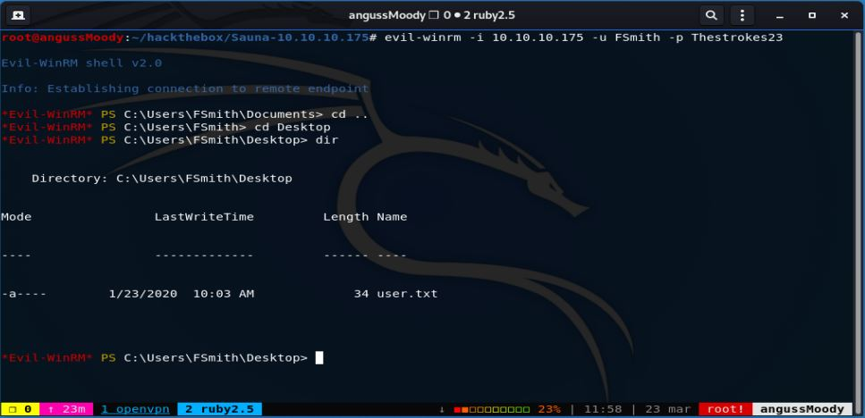

HTB Máquina Sauna
angussMoody
- Sistema: Windows
- Puntuación: 4.2
- Categoría: Fácil
Usuario:
Enumerando un poco la máquina nos encontramos con el grupo de trabajo, una mala práctica con los nombres de los empleados, así que al ser una máquina AD podemos pensar en un ataque ASREPRoast, vamos a crear un diccionario, con estos nombres, en este caso se puede realizar manual, con combinaciones de estos nombres encontrados o con alguna herramienta
nos creamos nuestra lista de Usuario

Agregamos nuestro dominio a nuestro archivo host
ya con este diccionario vamos a realizar el ataque ASREPRoast
este ataque nos devuelve un usuario y un hash en John the Ripper como le indicamos en el ataque, ahora debemos tratar de descifrar este hash.
Y de esta manera nos encontramos con la password de este usuario.
Proceso similar que realizamos en la máquina Forest
En este punto, ya tenemos un User y un Password, así que vamos a probar con evil-winrm como en máquinas pasadas
de esta manera obtenemos nuestra primer flag
Escalada de Privilegios:
Enumerando un poco la máquina nos encontramos con otro Usuario y vamos a hacer uso de una guía de enumeración para la escala de Privilegios de Windows que hemos visto anteriormente a ver con que nos encontramos

En la parte de usuarios nos encontramos con varios comandos que nos brindan información, entre ellos nos encontramos con uno que nos da como resultado al parecer un usuario y una password por defecto, pero nos encontramos con que el usuario que nos brinda no es ninguno de los que hemos enumerado hasta ahora, así que vamos a ver que podemos realizar con esta información.
Después de realizar varias pruebas nos damos cuenta que ese password es correspondiente al usuario que habíamos enumerado antes, pero iniciando sesión en evil-winrm con este usuario y realizando una enumeración no encontramos nada relevante que nos guíe por el camino hacia la segunda bandera, así que vamos a leer un poco en el foro a ver con que nos encontramos que nos ayude con el camino a esta flag
Revisando el foro nos encontramos con un camino que nos puede ayudar a nuestro objetivo, así que hacemos uso de la herramienta secretdump de impacket.

De esta manera nos encontramos con los secretos de los usuarios y nos encontramos con las credenciales del usuario Administrator.
ya con estos hashes tenemos muchas formas de iniciar sesión, en este caso lo realizaremos con evil-winrm
De esta manera encontramos la flag del Root.
Saludos Fr13ndS HTB